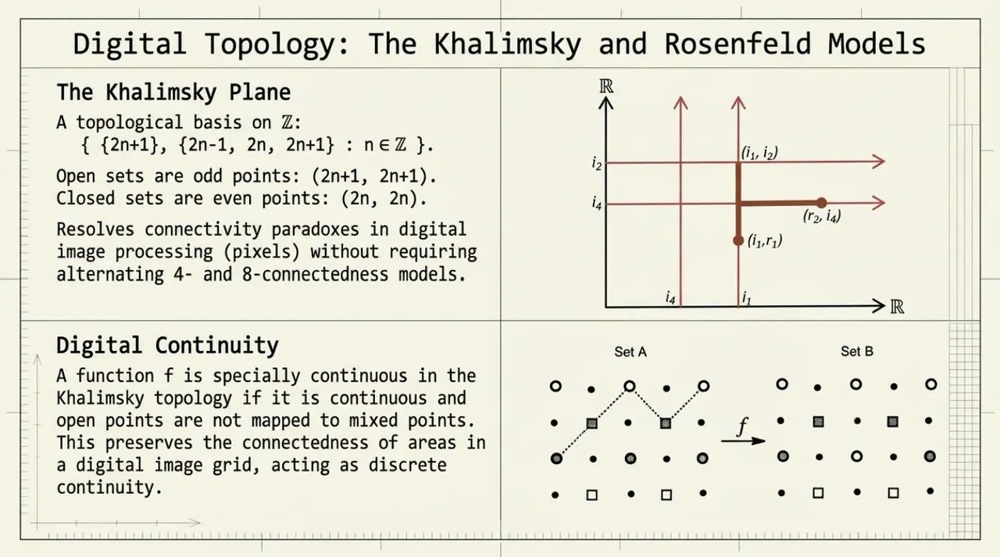

기둥 1 · 공간을 나누는 법 · 05장
픽셀 세상의 연결 — 디지털 위상
4-이웃 · 8-이웃의 역설과 칼림스키의 해법
4-이웃 · 8-이웃의 역설과 칼림스키의 해법
핵심 질문 — 네모난 픽셀로 그린 고리가 「안과 밖」을 제대로 나누게 하려면 이웃을 어떻게 정해야 할까?
컴퓨터 사진은 네모난 픽셀이 바둑판처럼 놓인 「징검돌 세상」이에요(03장). 어떤 픽셀끼리 이웃인지 정해야 덩어리를 셀 수 있는데, 흔한 방법 두 가지(4-이웃, 8-이웃)는 모두 이상한 결과를 내요. 칼림스키 위상은 점마다 열림·닫힘을 번갈아 정해 이 역설을 풀어요.
숫자 요약은 이 장의 예시 계산에서 나온 값입니다(실제 데이터가 아닌 설명용 값).
오늘은 조별 토론이에요. 주제는 「픽셀 고리는 안과 밖을 나누는가」.
사진 앱에서 영역 채우기(페인트통) 할 때 색이 새어 나가던 게 이거였나요?
행렬·벡터, 복잡한 공식을 몰라도 됩니다. 그림을 움직여 보고, 밑줄 친 말을 누르면 뜻이 나옵니다.
이 페이지 사용법: 밑줄 친 말을 누르면 뜻이 나옵니다(Esc로 닫기). 단계마다 그림을 직접 움직여 보고, 끝의 확인 퀴즈로 점검하세요. 앞 장: 04 콤팩트 — 유한한 우산으로 다 덮기
1조는 「8-이웃이면 충분하다」, 2조는 「점마다 열림·닫힘을 정해야 한다」를 맡아 토론해요. 조교가 그림판으로 주장을 시험합니다.
대각선은 이웃이야 아니야? 그냥 이웃이라고 하면 되잖아.
…그럼 안쪽 물도 대각선으로 새어 나가.
화면·사진·센서 데이터는 모두 띄엄띄엄한 점이에요. 연결을 말하려면 이웃 규칙이 꼭 필요해요.
같은 그림도 규칙에 따라 덩어리 수가 달라져요. 의료 영상이라면 진단이 바뀔 수도 있어요.
칼림스키 위상은 종이 위의 원처럼 「이어진 고리는 안과 밖을 나눈다」를 픽셀에서도 지켜 줘요.
이 장은 그림판을 직접 누르며 보는 게 가장 빨라요. 픽셀을 눌러 고리를 끊거나 이어 보세요.
상황 질문 — 그림판에서 대각선으로 그린 동그라미 안을 페인트통으로 칠하면, 왜 가끔 바깥까지 색이 번질까요?
「검은 선 8, 흰 바탕 4」처럼 규칙을 섞어 쓴다는 게 무슨 뜻이에요?
학교 수학으로 보면: 중학교 좌표평면의 점 (x, y)에서, 4-이웃은 x나 y 중 하나만 1 차이, 8-이웃은 둘 다 1 차이(대각선)까지 허용이에요.
| 식 조각 | 읽는 법 | 뜻 |
|---|---|---|
| |x₁−x₂| + |y₁−y₂| = 1 | 4-이웃: 가로나 세로로 딱 한 걸음 | |
| max(|x₁−x₂|, |y₁−y₂|) = 1 | 8-이웃: 대각선 한 걸음도 포함 | |
| 8 / 4 | 팔 슬래시 사 | 검은 픽셀은 8-이웃, 흰 픽셀은 4-이웃으로 잇기 |
(0,0)과 (1,1): 가로 1 + 세로 1 = 2 → 4-이웃 아님, 8-이웃 맞음
마름모 고리는 대각선으로만 이어져 있음
4/4: 고리가 조각나는데 안쪽은 막힘 (역설)
8/8: 고리는 이어지는데 안쪽이 대각선으로 샘 (역설)
8/4나 4/8처럼 섞으면 모순이 사라짐
선과 바탕에 서로 다른 규칙을 써야 한다니, 규칙 하나로 통일이 안 되는구나.
그림판에서 대각선 동그라미를 그리고 안쪽을 칠하면, 색이 대각선 틈으로 새어 나가기도 해요. 반대로 선이 끊겼다고 보면 안쪽이 따로 있어도 이상해요.
4-이웃만 쓰면 대각선 고리는 끊긴 점들인데도 안과 밖을 나누고, 8-이웃만 쓰면 고리는 이어졌는데 안과 밖이 이어져요. 어느 쪽이든 「이어진 고리는 안과 밖을 나눈다」(조르당 곡선 정리)의 픽셀판이 깨져요.
규칙을 4/4, 8/8, 8/4로 바꿔 가며 결과 문장을 비교하세요.
8/8이 제일 많이 이어 주니까 제일 좋은 규칙이죠!
8/8에서 안쪽 색칠 영역 색을 봐. 빨갛지? 새고 있다는 뜻이야.
원자료 「Digital Topology: The Khalimsky and Rosenfeld Models」 왼쪽 위: 4-이웃·8-이웃을 번갈아 쓰지 않고도 연결 역설을 해결.

상황 질문 — 징검돌 사이마다 작은 다리를 놓으면, 돌과 다리는 같은 종류의 「자리」일까요?
{2n−1, 2n, 2n+1}에서 n은 뭐고, 왜 2n이에요?
학교 수학으로 보면: 중학교 문자와 식: 2n은 짝수, 2n+1은 홀수를 나타내는 식이에요. n에 0, 1, 2 …를 넣어 보면 돼요.
| 식 조각 | 읽는 법 | 뜻 |
|---|---|---|
| {2n+1} | 이 엔 더하기 일만 담은 집합 | 홀수 하나 — 열린 점의 가장 작은 이웃 |
| {2n−1, 2n, 2n+1} | 짝수와 양옆 홀수 — 닫힌 점의 가장 작은 이웃 | |
| ℤ | 정수 전체 | 칼림스키 직선의 점들 |
n = 0: {1}은 열린 집합, 점 0의 가장 작은 이웃은 {−1, 0, 1}
n = 1: {3}, 점 2의 가장 작은 이웃 {1, 2, 3}
{1} ∩ {−1, 0, 1} = {1} → 목록에 있음 (규칙 3 OK)
연속된 정수 {0, 1, 2}는 한 덩어리로 연결
짝수는 혼자 있을 수 없고 꼭 양옆 홀수를 데려오는 거네요. 그래서 이어지는구나!
징검돌(짝수) 사이에 다리(홀수)를 놓으면, 돌 위에 선 사람의 「주변」엔 늘 양옆 다리가 들어와요. 다리 위 사람의 주변은 그 다리뿐이에요.
칼림스키 직선: 홀수 n은 {n}이 열린 집합(열린 점), 짝수 n의 가장 작은 이웃은 {n−1, n, n+1}(닫힌 점). 이 위상에서 연속된 정수들은 연결돼요 — 이산 위상과 달리 「이어진 정수」를 말할 수 있어요.
홀수와 짝수를 번갈아 눌러, 가장 작은 이웃이 어떻게 다른지 보세요.
그럼 짝수가 홀수보다 이웃이 3배 크니까 3배 중요하네요!
중요도가 아니라 「열림·닫힘」의 차이야. 점 0을 눌러 봐.
원자료 「The Khalimsky Plane」 상자: ℤ 위의 기저 {{2n+1}, {2n−1, 2n, 2n+1}}.
상황 질문 — 바둑판의 교차점마다 「열림·닫힘」 성격을 정하면, 1단계의 마름모 고리 문제가 풀릴까요?
바둑판의 어떤 교차점에서는 대각선으로 지나갈 수 있고, 어떤 교차점에서는 막혀 있어요. 통로가 엇갈려 열리니, 선과 바탕이 동시에 대각선을 쓰는 일이 없어요.
칼림스키 평면 ℤ²에서는 같은 규칙으로 검은 픽셀과 흰 픽셀을 모두 다뤄도, 마름모 고리가 이어지고 안과 밖이 막혀요. 선과 바탕을 미리 구분하지 않아도 되는 것이 장점이에요.
규칙을 「칼림스키」로 바꾸고, 픽셀 몇 개를 눌러 고리를 다르게 그려 보세요.
고리 위 점들에 「열」, 「닫」 표시가 있어요! 대각선은 그 점들끼리만 이어지네요.
고리를 섞인 점 위로 대각선 지나가게 그려 봐. 그러면 끊길 거야 — 그게 규칙의 대가야.
원자료 오른쪽 위 그림(점 (i₁, i₂)에서 꺾이는 길)과 아래 「Digital Continuity」 상자.
X1이 AI에게 「사진에서 물체 개수를 셀 때 8-이웃이 항상 정확하죠?」라고 물었어요.
영상 프로그램의 숫자는 이웃 규칙에 따라 달라져요. AI 답에 「항상」, 「무조건」이 있으면 그림판의 마름모 고리 같은 작은 반례로 시험해 보세요.
주판봇은 「8/8 규칙이면 해결」, 초파리 연구원은 「칼림스키 규칙이면 해결」을 주장했어요. 해결 = 고리가 한 덩어리이고 안쪽이 막힘.
「칼림스키 규칙이 고리도 잇고 안쪽도 막아.」
「8/8이면 다 이어지니까 해결이에요!」
누가 맞을지 먼저 예상해 보고 단추를 누르세요. 판정은 계산 결과로만 합니다.
개념정리 흐름: 픽셀 이웃 규칙과 연결 역설 → 칼림스키 직선 → 칼림스키 평면
| 개념 | 한 줄 뜻 | 일상 비유 | 비유의 한계 |
|---|---|---|---|
| 4-이웃 / 8-이웃 | 가로세로만 / 대각선까지 이웃 | 페인트통 채우기 | 둘 다 위상에서 나온 규칙이 아니라 정리를 쓰기 어려움 |
| 칼림스키 직선 | 홀수 = 열린 점, 짝수 = 닫힌 점 | 다리와 징검돌 | 하우스도르프가 아니라 이웃한 두 점을 떼어 놓을 수 없음 |
| 칼림스키 평면 | 순수한 점끼리만 대각선 연결 | 엇갈려 열리는 바둑판 통로 | 그릴 수 있는 대각선에 제약이 있음 |
| 픽셀 연결 | 이웃 규칙으로 정해지는 덩어리 | 물체 세기 | 규칙이 바뀌면 덩어리 수도 바뀜 |
토론 정리: 1조의 「대각선도 잇자」는 반만 맞고, 2조의 「점마다 성격을 정하자」가 모순을 없앴어요.
…그림판, 내가 그린 고리도 판정됐어.
대각선 하나로 이렇게 싸울 줄은….
다음 시간엔 2조가 발표해요! 순서로 만든 공간!
다음 장 예고: 06장 발표수업에서는 칼림스키 직선의 지그재그를 「위아래 순서」로 읽는 알렉산드로프 공간을 2조가 발표해요.